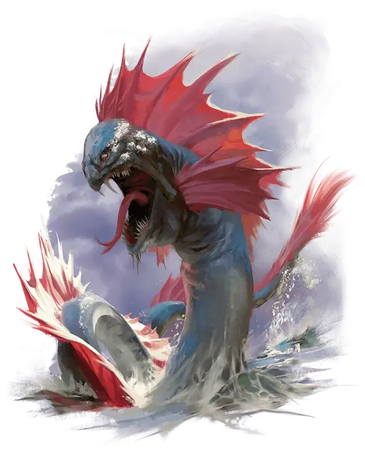

Молодой морской змей
Young Sea Serpent
Огромный Дракон, нейтральный

Класс Доспеха 16 (природный доспех)
Хиты 123 (13к12 + 39)
Скорость 10 футов, плавая 40 футов
| мод | спас | ||
|---|---|---|---|
| СИЛ | 19 | +4 | +7 |
| ЛОВ | 12 | +1 | +1 |
| ТЕЛ | 17 | +3 | +6 |
| мод | спас | ||
|---|---|---|---|
| ИНТ | 11 | +0 | +0 |
| МДР | 13 | +1 | +1 |
| ХАР | 10 | +0 | +0 |
Навыки Восприятие +4, Скрытность +4
Иммунитет к урону холод
Чувства тёмное зрение 120 футов, пассивное Восприятие 14
Языки Общий, Драконий
Опасность 8 (3900 опыта)
Бонус мастерства +3
Особенности
Осадный монстр. Морской змей наносит двойной урон объектам и сооружениям.
Амфибия. Морской змей может дышать воздухом и под водой
Действия
Мультиатака. Морской змей совершает одну атаку Укусом и одну атаку Сжиманием или Хвостом.
Укус. . Рукопашная атака оружием: +7 к попаданию, досягаемость 10 фт., одна цель. Попадание: 15 (2к10+4) колющего урона плюс 5 (1к10) урона холодом.
Сжимание. . Рукопашная атака оружием: +7 к попаданию, досягаемость 20 фт., одна цель. Попадание: 22 (4к8+4) дробящего урона и цель схвачена (Сл высвобождения 15). Пока захват не закончится, цель опутана, и морской змей не может схватить другую цель.
Хвост. . Рукопашная атака оружием: +7 к попаданию, досягаемость 15 фт., одна цель. Попадание: 9 (1к10+4) дробящего урона и если цель - существо, оно должно преуспеть в спасброске Силы Сл 15, иначе будет отброшено на расстояние до 30 фт. от морского змея и сбито с ног.
Холодное дыхание (перезарядка 5-6). Морской змей выдыхает 30-футовый конус холода. Каждое существо в этой области должно совершить спасбросок Телосложения Сл 14, получая 38 (7к10) урона холодом в случае провала или половину этого урона в случае успеха.
Описание
Морские змеи, наряду с драконьими черепахами, являются одними из самых страшных хищников морских глубин и вызывают самые страшные кошмары у многих моряков. Их сильные плавники позволяют им передвигаться по воде с огромной скоростью.
Молодые морские змеи - проворные охотники. Они используют рифы и естественный камуфляж, чтобы спрятаться перед нападением, выбирая одного за другим членов экипажа корабля. Древние морские змеи вырастают достаточно большими, чтобы разрушать целые корабли, а затем в свободное время питаются беспомощными моряками в воде. В любом возрасте морской змей нападает, нанося страшные укусы, удары хвостом, сжимающую хватку и холодное дыхание, которое может оставить трупы моряков замерзать среди обломков кораблей.
Морские змеи - такие же свирепые территориальные существа, как и другие драконы, и они не любят, когда корабли проходят через их владения без разрешения. Некоторых можно успокоить, принеся им сокровища, но большинство требует, чтобы команда корабля принесла в жертву одного или нескольких своих собратьев.
Живя среди обломков затонувших кораблей или в глубоких морских пещерах, морские змеи собирают груз с потопленных ими судов, накапливая огромные клады торговых товаров, безделушек моряков и добычи пиратов.